青青的睡去—失眠
Hit the Herb-Insomnia
Hit the Herb
2024
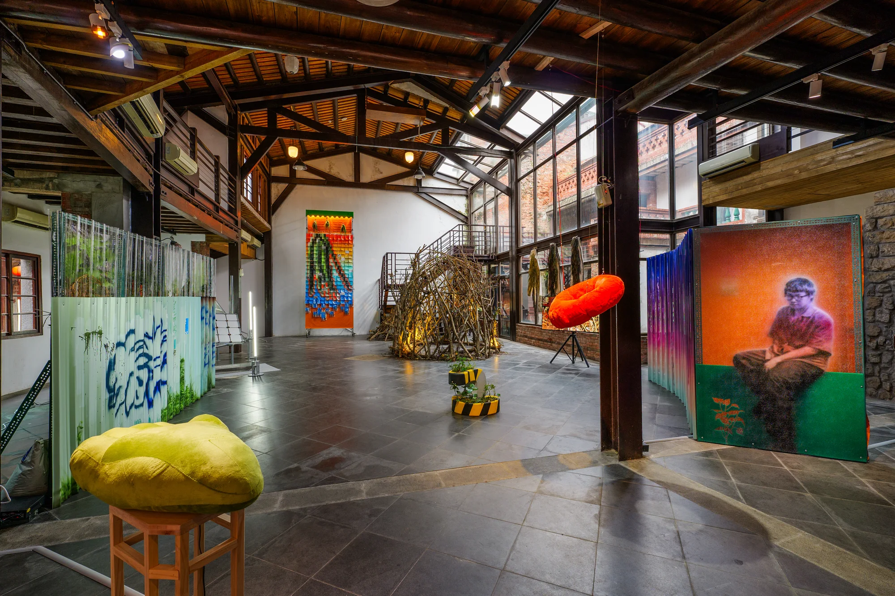
以藝術家自己長期失眠的經歷作為開端，為了尋覓西醫以外的民俗方式，在上山找尋護肝又助眠的草藥無果後，轉向青草巷的各間店鋪討教青草如何疏肝解鬱、幫助入眠。藝術家在探訪調查過後，嘗試每個店家推薦的青草茶，並分析其中的配方差異以及效用，以此做為繪畫主軸，拼接相關材料製作成大型掛軸，結合現成物陳列的呈現，以感念這趟拯救睡眠之旅。
Beginning with his own long-term experience of insomnia, the artist sought folk approaches beyond Western medicine. After an unsuccessful search in the mountains for herbs to support liver health and sleep, he turned to the shops of Herb Alley to learn how their herbal preparations were used to soothe the liver, ease emotional tension, and help with sleep. Following these visits and research, he tried the herbal teas recommended by each shop and examined differences in their formulas and effects. These encounters became the focus of his painting. Assembling related materials into large hanging scrolls and presenting them alongside ready-mades, he commemorates this journey in search of restful sleep.
Hit the Herb-Insomnia
Hit the Herb-Herb Gathering
Hit the Herb-Herb Alley
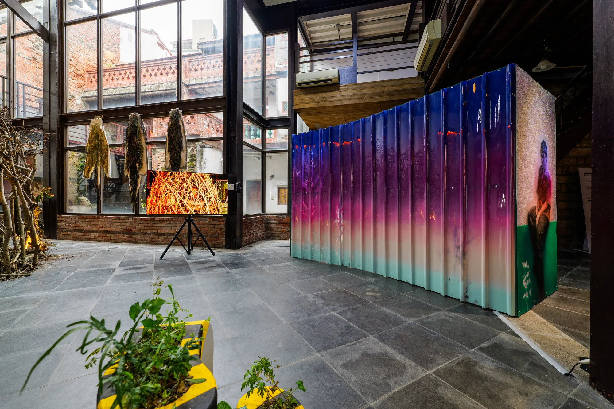
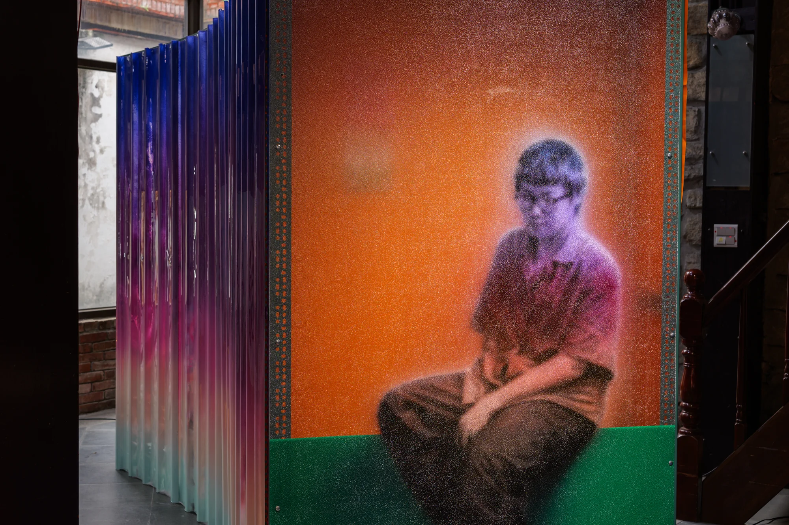
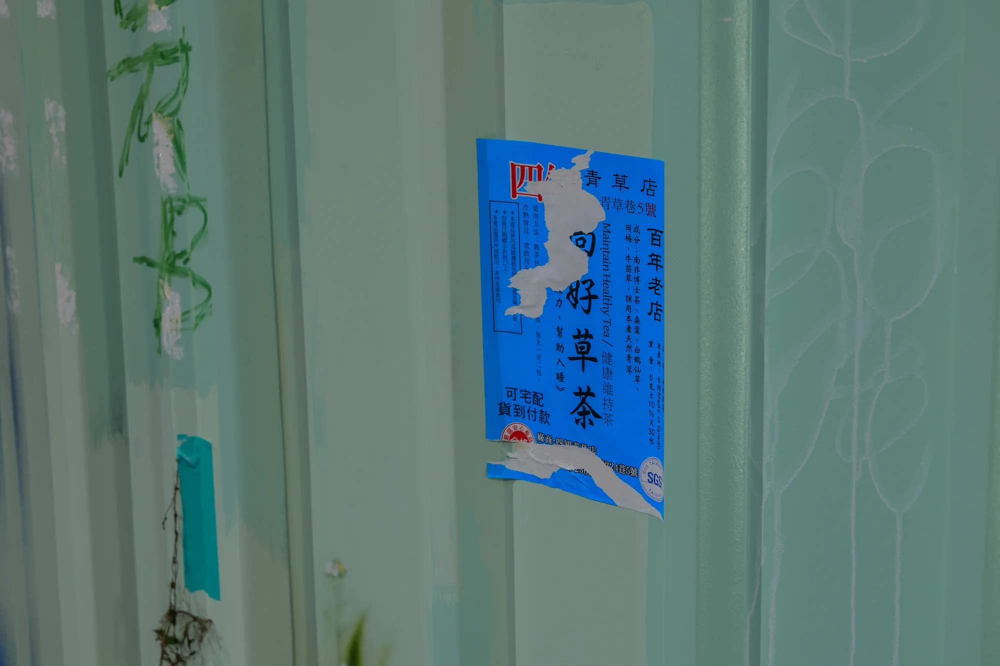
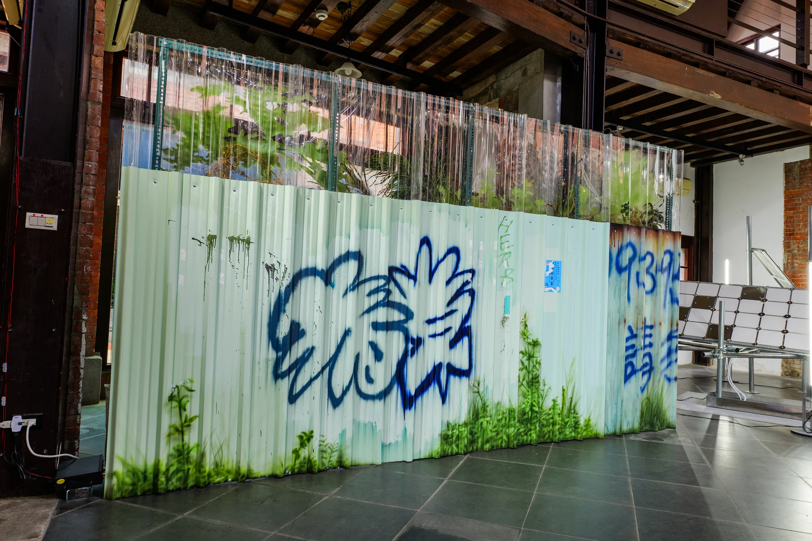
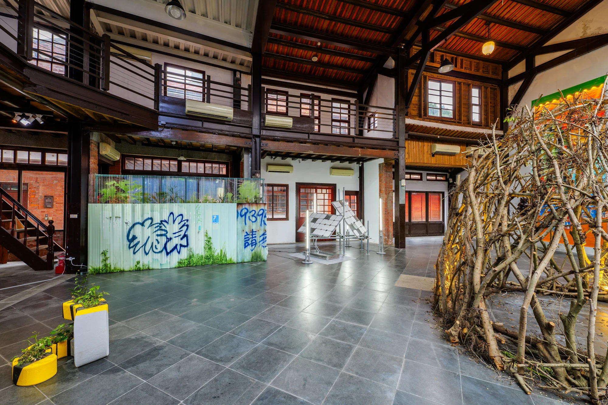
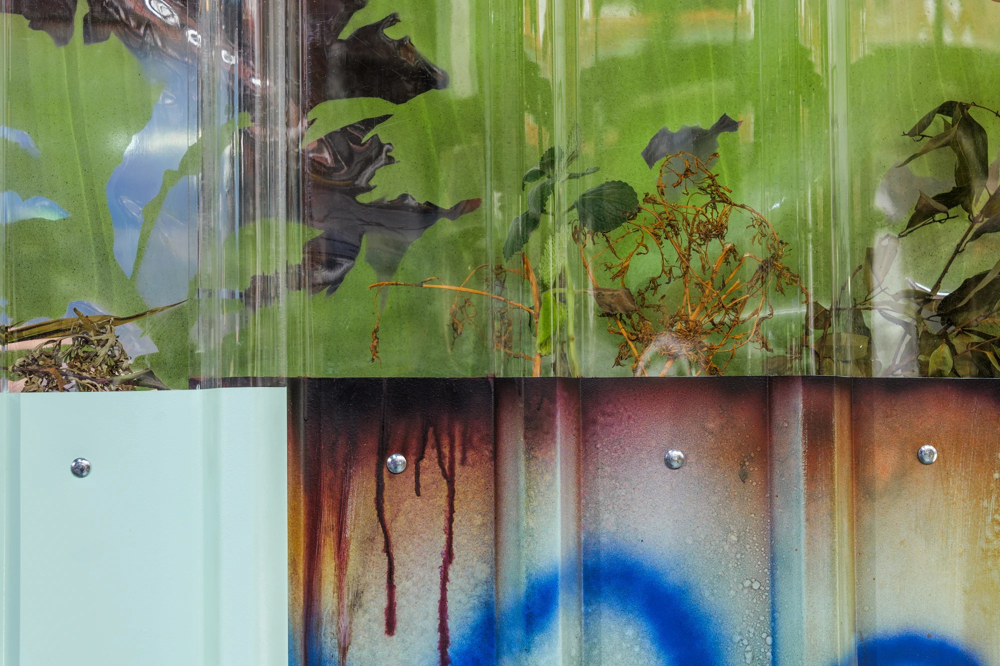
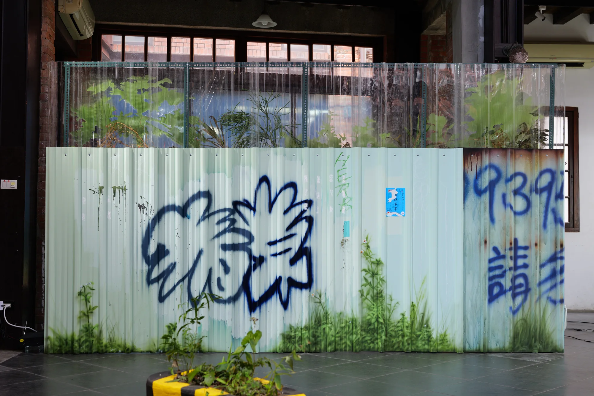
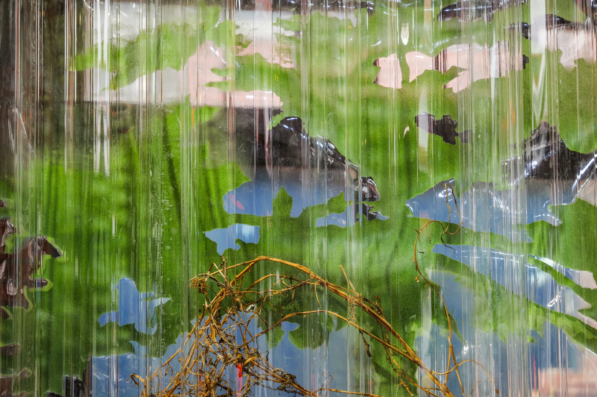
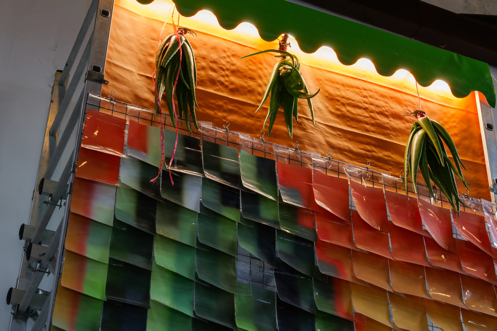
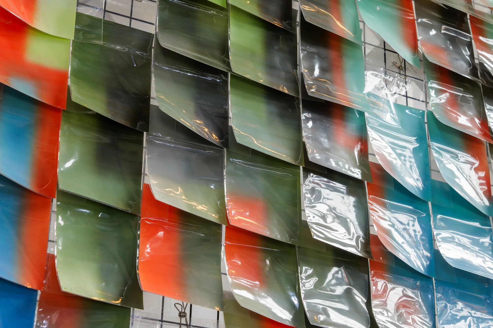
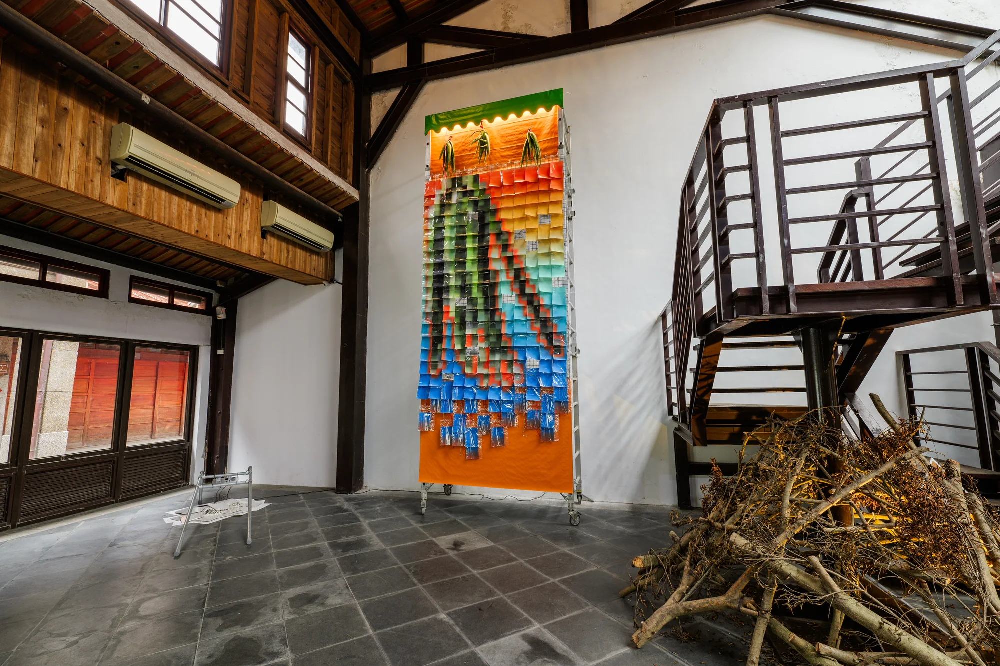
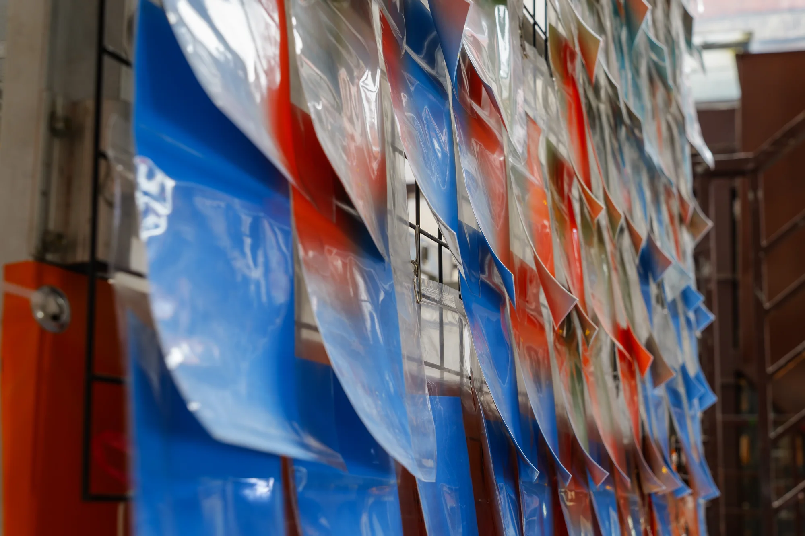
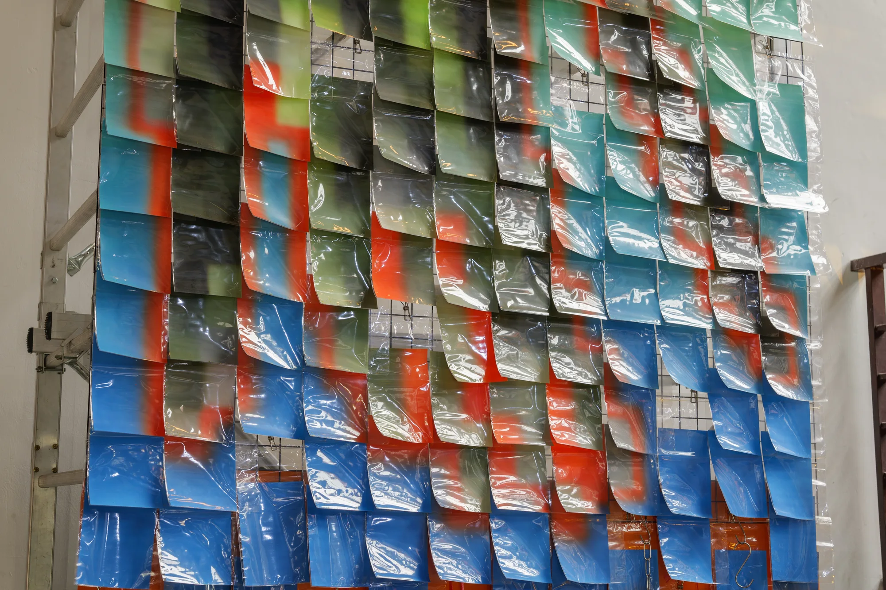